Arbeiten · Tasty Studios
Aus demAtelier.
Websites, die wir für Hotels und Restaurants gebaut haben: für unsere Partner und als Designstudien für Häuser, deren Handschrift wir schätzen. Jede aus ihrem Haus heraus entworfen.
UnserePartner.
Für diese Häuser und Marken bauen wir die Website, aus ihrer eigenen Welt heraus.
Hannover-LindenAbende an einer langen Tafel
Culinarium
Momo stellt die Drinks hin und erklärt jeden, Rudi bringt die Gänge, und am Ende sitzt man an einer Tafel wie in einer Familie. Für diese Abende bauen wir die Website.
WebsiteKartenPlakate

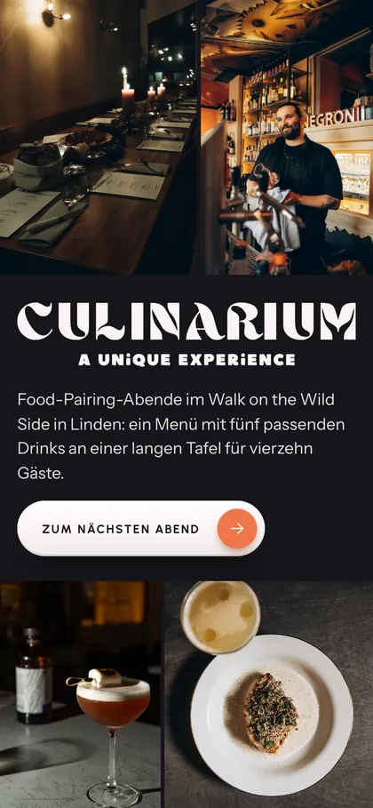

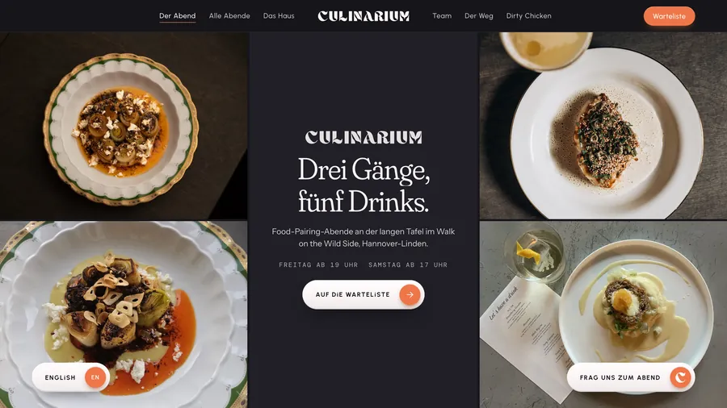
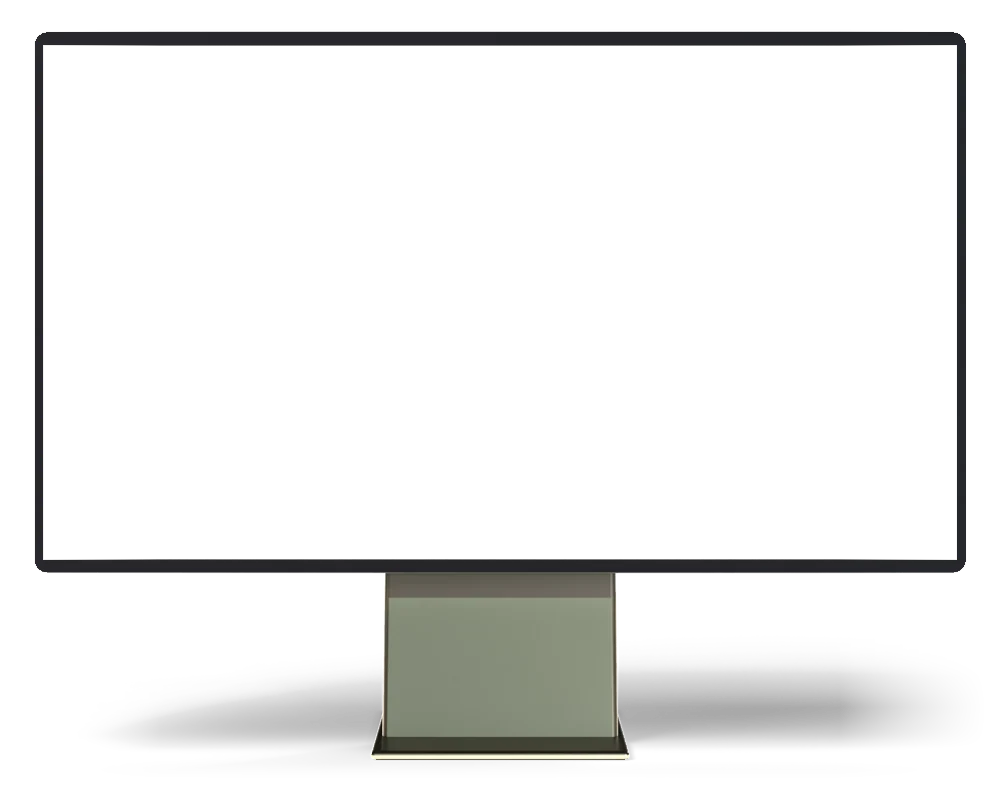


Hannover-LindenNachbarschaftsbar
Walk on the Wild Side
Eine Bar ohne feste Karte: Man sagt, was man mag, und Momo mixt den Drink dazu, unter einer Decke wie ein Kathedralengewölbe. Wir bauen ihre Website.
WebsiteDrinksProgrammTafel


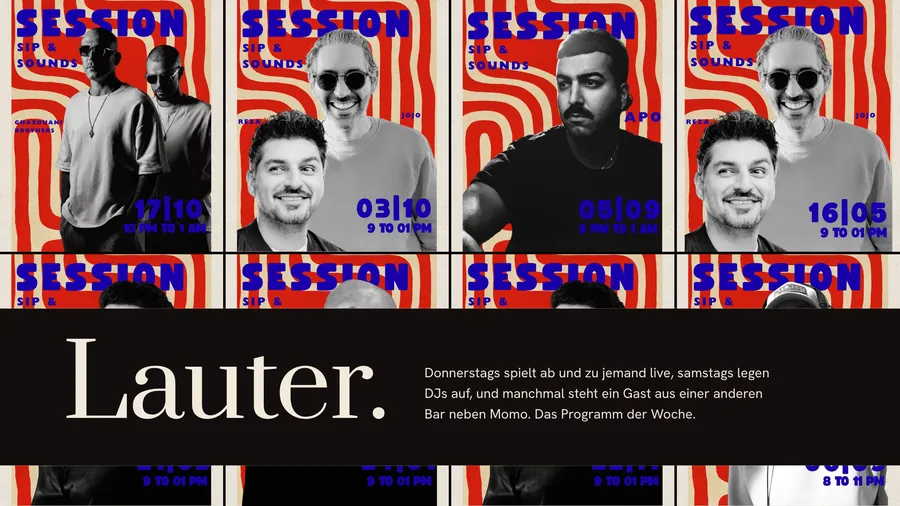
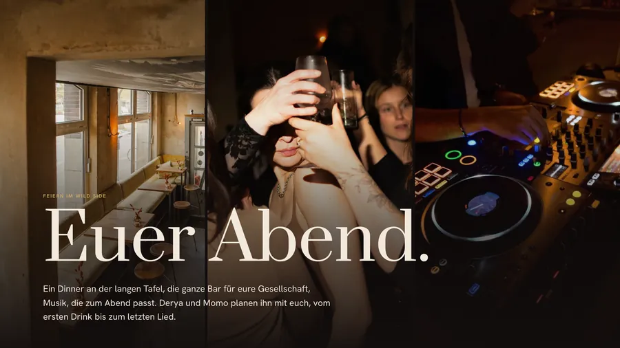
HamburgDrei Restaurants, eine Seite
Salt & Silver
2014 gaben Cozy und Jo ihre Jobs auf, um zu reisen, zu surfen und zu kochen. Daraus wurden Restaurants am Hafen und am Meer. Für alle drei bauen wir eine Seite, mit Karte, Shop und Chat.
WebsiteKarteShopChat
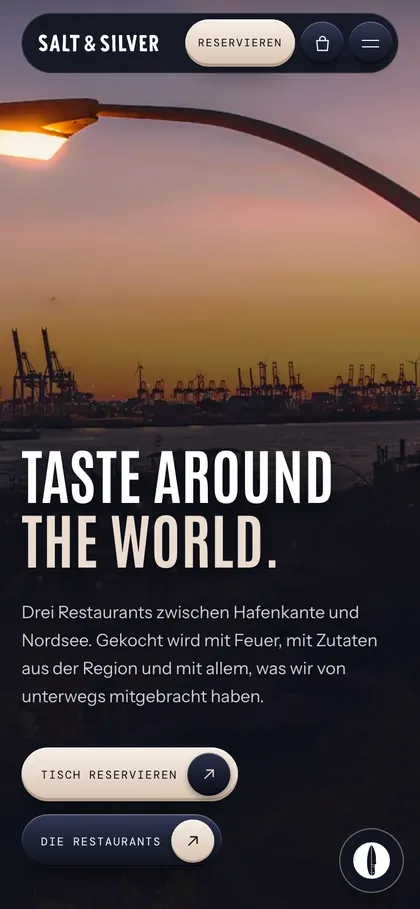

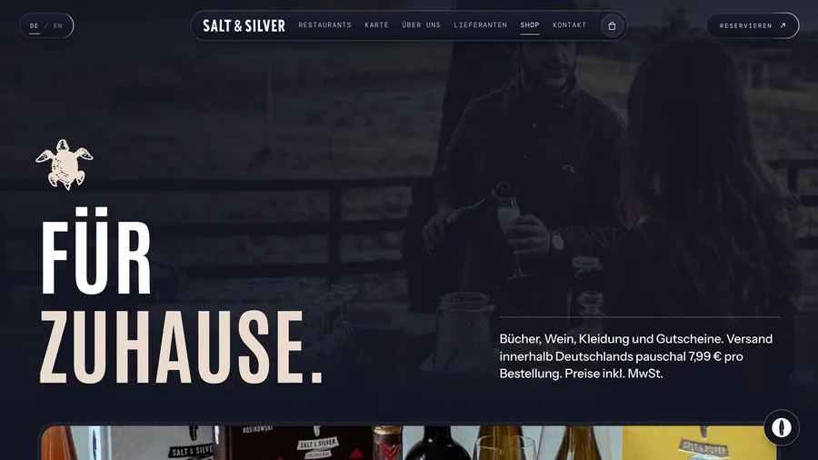

AmsterdamSoziale Plattform
txtme.social
Eine Plattform für Menschen, die sich lieber begegnen als schreiben. Wir bauen ihre Website mit Shop und Chat.
WebsiteShopChat
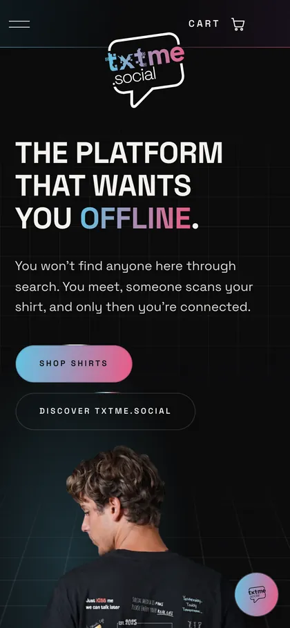
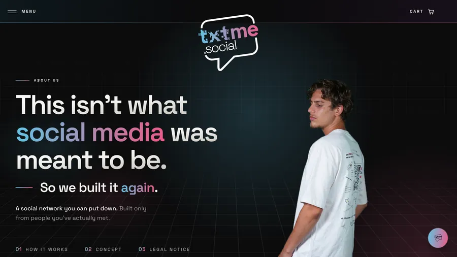
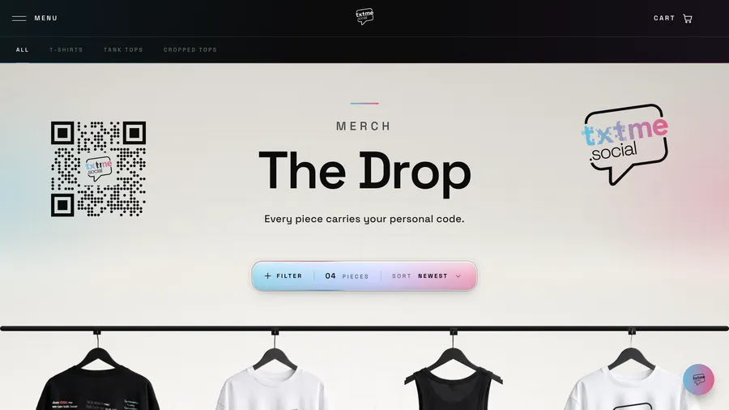

Designstudien
Designstudien.Häuser, neu gedacht.
Eigene Entwürfe, unverbindlich und ohne Auftrag der Häuser. Wir haben jedes Haus besucht, wie ein Gast es tut, und seine Seite aus seinen Fotos, seiner Geschichte und seinen Farben neu gebaut.
InterlakenGrandhotel seit 1874
GrandBeau-Rivage
Ein Grandhotel zwischen Thunersee und Brienzersee. Für das Haus haben wir die Website neu entworfen.

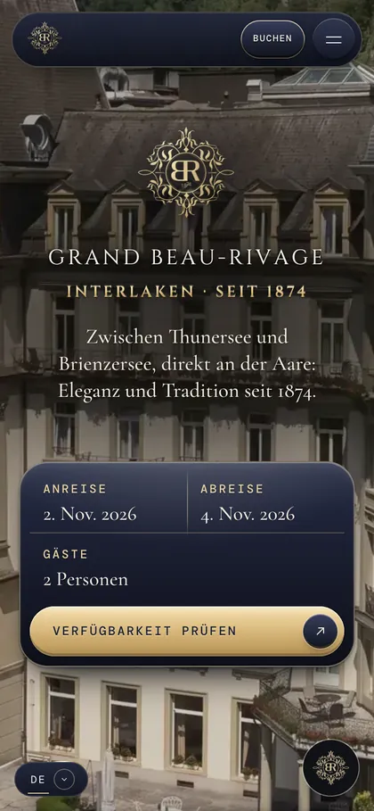
Familie Maeder.Vier Häuser.
Vier Häuser einer Familie in Interlaken und im Kandertal: eine gemeinsame Startseite, darunter jedes Haus mit eigener Website und eigener Welt.

Die gemeinsame StartseiteAnsehen
Interlaken
Carlton-Europe
Zwei Häuser, ein Hotel: seit 1898 in den ehemaligen Hotels Carlton und Villa Europe.
Entwurf ansehenKandersteg
Waldhotel Doldenhorn
Zu Gast bei Freunden, abseits der Hauptstrasse mitten in einem Naturpark.
Entwurf ansehen
Kandersteg
Landgasthof Ruedihus
1753 gebaut. Heute Abend Ihr Tisch, heute Nacht Ihr Bett.
Entwurf ansehenGasterntal
Berghotel Gasterntal
Ein Berghotel am Ende des Tals, wildromantisch und ohne Durchgangsverkehr.
Entwurf ansehenFamilie Zurbriggen.Drei Häuser.
Saas-Almagell und Zermatt: eine gemeinsame Startseite, darunter drei Häuser einer Familie, drei Websites, die einander nicht gleichen.
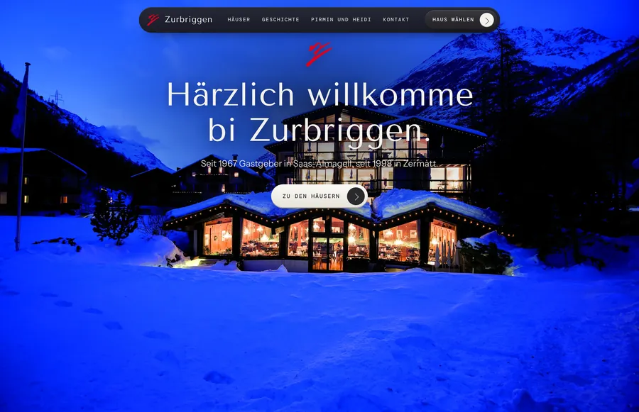
Die gemeinsame Startseite
Saas-Almagell
Hotel Monte-Moro
Bei uns scheint fast immer die Sonne. Gastgeber: Esther und Fabian Zurbriggen.

Zermatt
Suitenhotel Zurbriggen
Fünf Suiten, jede mit Südbalkon und freier Sicht aufs Matterhorn.
Saas-Almagell
Wellness & Spa Pirmin Zurbriggen
Seit 1967 neben dem Sessellift, in den Räumen von Heinz Julen.
Designstudien
Gastronomie.Gehobene Küche.
Zwei Häuser der Familie Kuchler im Thurgau, zwei eigene Welten: die Stube mit Degustationsmenü und der Tisch am Hafen.

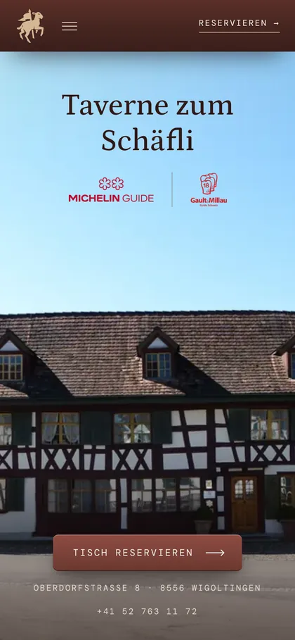
Wigoltingen
Taverne zum Schäfli
Herzlich willkommen im Haus der Gastlichkeit: Degustationsmenü, Klassiker à la carte und eine Wand voller Weine.
Entwurf ansehen
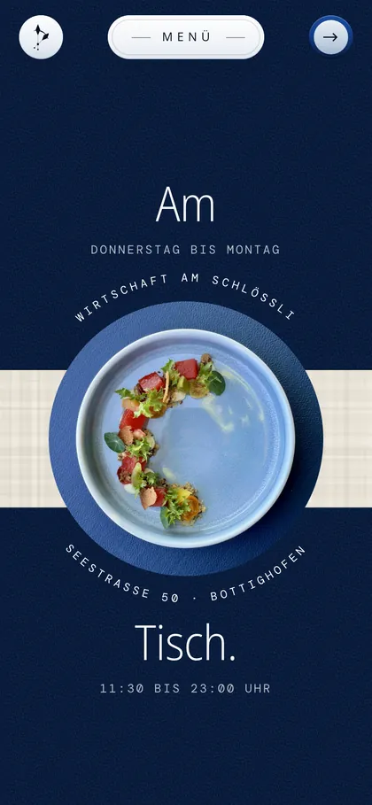
Bottighofen
Wirtschaft am Schlössli
Blaue Stühle unter Platanen, am Hafen, mit Blick auf den See und die Alpen.
Entwurf ansehen
Ein erstes Gespräch
Ihr Hausals Nächstes.
Jede dieser Seiten ist aus ihrem Haus heraus entstanden. Erzählen Sie uns von Ihrem, und wir zeigen Ihnen, was dort möglich ist.